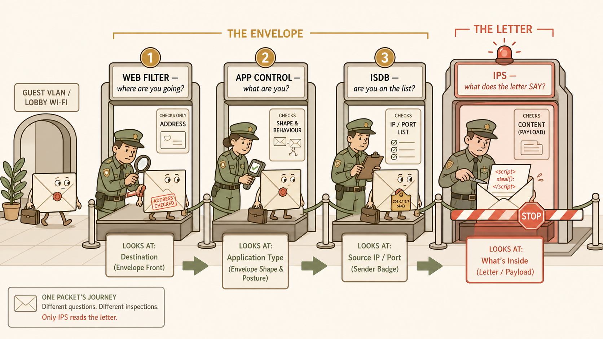
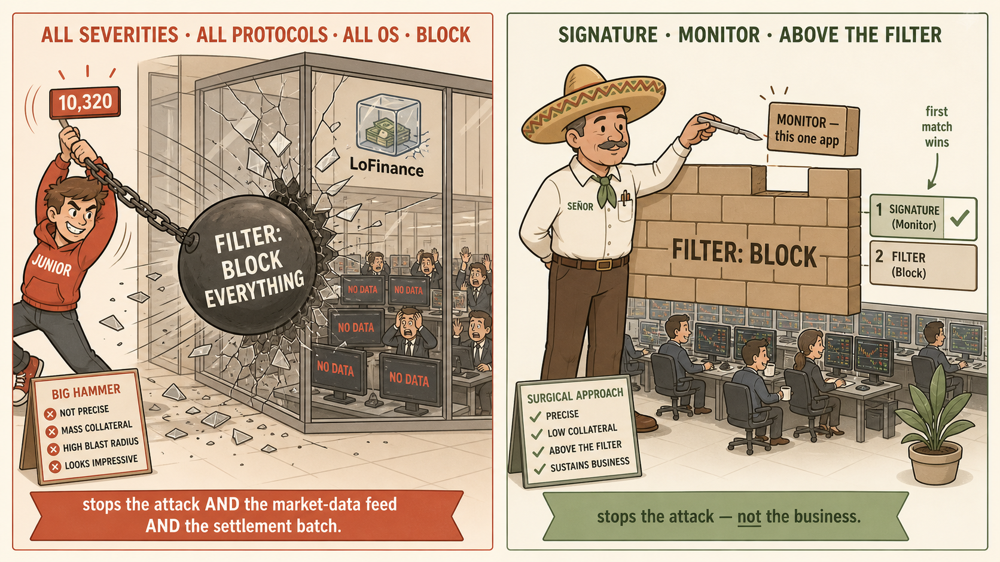
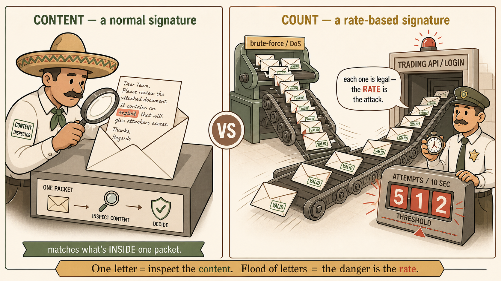
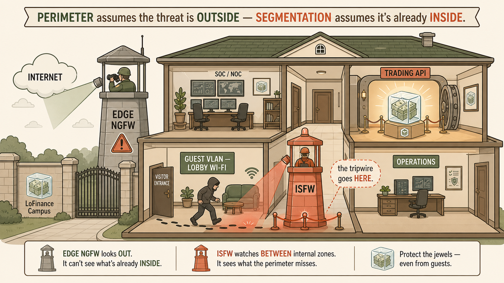
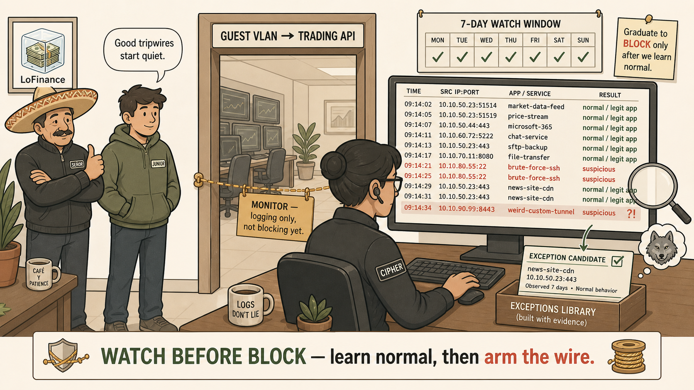

Primary Visual · Packet Journey
The corridor of checkpoints
This is the anchor image. A single suspicious packet — Sunday's exploit — travels a corridor and is inspected by four checkpoints in sequence. The first three only look at the outside; the fourth opens it.

IMG-01 · packet-journey-checkpoints.png
A single packet walking a security corridor: three envelope-readers wave it through, IPS opens the letter and stops it.
Flat minimalistic but highly detailed vector illustration on a warm cream (#faf5e9) background, clean bold soft-brown outlines, no gradients, no photorealism, coral (#e07856) and muted-gold and sage-green accents, storybook-but-professional. COMPOSITION: a long horizontal corridor read left to right, like an airport security lane, divided into four labelled checkpoint gates. Travelling through the corridor is a single anthropomorphic envelope character — a sealed paper envelope with tiny legs, a slightly shifty expression, carrying a small briefcase — representing one network packet (Sunday's exploit from the guest VLAN). GATE 1 labelled "WEB FILTER — where are you going?": a checkpoint officer reading only the ADDRESS written on the front of the envelope, stamping it, waving it on. GATE 2 labelled "APP CONTROL — what are you?": an officer scanning the envelope's SHAPE and posture with a handheld scanner, identifying its type, waving it on. GATE 3 labelled "ISDB — are you on the list?": an officer checking a clipboard list of IP/port names, glancing at a badge on the envelope, waving it on. GATE 4, larger and lit differently with a coral spotlight, labelled "IPS — what does the letter SAY?": this officer SLITS THE ENVELOPE OPEN with a letter-opener and reads the folded letter inside, whose text is visibly a malicious code string; a red STOP barrier drops. Above the first three gates a small muted-gold banner reads "THE ENVELOPE"; above gate 4 a coral banner reads "THE LETTER". Small side detail bottom-left: a doorway marked "GUEST VLAN / LOBBY WI-FI" where the envelope entered, subtly showing the threat came from inside. Visual hierarchy: gates 1–3 rendered lighter/flatter (quick glances), gate 4 rendered with more weight and the only red element in the scene. Clear readable labels. Do NOT include: real brand logos, photorealistic faces, gore, dense technical jargon walls. LEARNING PURPOSE: cements that web filter / App Control / ISDB inspect the envelope-and-sender while IPS alone reads the payload — the central seam of the session.
Aspect ratio: 16:9 · Placement: top of page, primary anchor · Alt text: Four security gates in a corridor; the first three read the outside of an envelope-shaped packet and wave it on, the fourth opens it and reads a malicious letter inside, dropping a stop barrier. · Reinforces: Envelope vs letter — the question IPS answers that the other three don't.
Visual 2 · The Wrecking Ball vs the Scalpel
Two ways to hold the tool
A side-by-side that makes the false-positive danger visceral and pairs it with the surgical fix.

IMG-02 · wrecking-ball-vs-scalpel.png
Left: Junior swings a wrecking ball at the whole trading floor. Right: Señor makes one precise cut above the wall.
Flat minimalistic detailed vector illustration, warm cream (#faf5e9) background, soft-brown outlines, coral / muted-gold / sage-green accents, no gradients, no photorealism, split into two panels with a thin vertical divider. LEFT PANEL, tinted faintly amber/red, header "ALL SEVERITIES · ALL PROTOCOLS · ALL OS · BLOCK": a young overconfident engineer character (Junior — early 20s, hoodie, slightly cocky grin, a small "10,320" counter floating over his head) gleefully swinging a giant wrecking ball labelled "FILTER: BLOCK EVERYTHING" into a glass-walled trading floor full of tiny panicked traders at desks with market screens; screens going dark; the LoFinance logo (a stack of banknotes frozen inside a clear ice cube) on the wall cracking. Caption ribbon: "stops the attack AND the market-data feed AND the settlement batch." RIGHT PANEL, tinted faintly sage/calm, header "SIGNATURE · MONITOR · ABOVE THE FILTER": a calm older engineer character (Se~nor — wearing a sombrero, kind weathered face, immaculate) making a single precise cut with a scalpel through ONE brick near the top of an otherwise-intact brick wall; the wall is labelled "FILTER: BLOCK" and the single removed brick is labelled "MONITOR — this one app"; behind the wall the same trading floor is calm and lit, traders working. A small stacked-order diagram beside the wall shows two rows: top row "SIGNATURE (Monitor)" with a check, bottom row "FILTER (Block)" — an arrow labelled "first match wins" pointing at the top row. Do NOT include: real logos other than the described fictional LoFinance ice-cube mark, blood, realistic faces. Keep both engineers' designs consistent with a storybook cast. LEARNING PURPOSE: contrast the wrecking-ball danger of a block-everything Filter (false positives that halt the business) with the scalpel fix — a specific signature set to Monitor, placed above the Filter, first-match-wins.
Aspect ratio: 16:9 · Placement: beside the false-positive / exception concept · Alt text: Left, a junior engineer wrecking-balls a whole trading floor with a block-everything filter; right, a senior engineer removes a single brick with a scalpel above an intact wall, keeping the floor running. · Reinforces: Wrecking ball vs scalpel; exception = Signature+Monitor ABOVE the Filter; first match wins.
Visual 3 · Content vs Count
The machine gun, not the handgun
The rate-based concept, made physical with the student's own keeper analogy.

IMG-03 · content-vs-count-machinegun.png
One checkpoint reads what a packet SAYS; another counts how FAST they arrive.
Flat minimalistic detailed vector illustration, warm cream (#faf5e9) background, soft-brown outlines, coral / muted-gold / sage-green accents, no gradients, two contrasting halves joined by a central "vs". LEFT HALF header "CONTENT — a normal signature": a single envelope-packet on an inspection table, opened, an officer with a magnifying glass reading the LETTER inside and finding one obviously malicious word highlighted in coral; caption "matches what's INSIDE one packet." RIGHT HALF header "COUNT — a rate-based signature": a rapid-fire stream of IDENTICAL, perfectly innocent-looking white envelopes being fired from a stylised machine-gun-shaped mailer (playful, non-graphic, clearly a mail-cannon not a real weapon) toward a doorway labelled "TRADING API / LOGIN"; each envelope is stamped "VALID"; an officer beside the door is NOT reading them — instead he watches a large tally counter and a stopwatch, the counter reading "512 attempts / 10 sec" glowing coral, a threshold line being crossed. Speech bubble from the officer: "each one is legal — the RATE is the attack." Small caption strip along the bottom: "Handgun = one shot to inspect. Machine gun = the danger is the rate of fire." A tiny label near the mail-cannon: "brute-force / DoS." Do NOT include: realistic firearms, violence, gore, real logos. Keep the mail-cannon whimsical and clearly a mail device. LEARNING PURPOSE: distinguish content-matching (inspect one payload) from rate-based counting (event + window + threshold), and show brute-force/DoS as the class where every packet is valid and only the cadence is hostile.
Aspect ratio: 3:2 · Placement: beside the rate-based signatures concept · Alt text: Left, an officer reads the malicious content of a single opened packet; right, an officer ignores a stream of identical valid envelopes fired rapidly and instead watches a counter reading 512 attempts in 10 seconds crossing a threshold. · Reinforces: Content vs count; rate-based catches brute-force/DoS; "machine gun, not handgun."
Visual 4 · Placement — Inside the House
Why the perimeter never saw it
The architecture insight — the single most exam-relevant judgment of the session.

IMG-04 · inside-the-house-isfw.png
The guard was watching the front gate. The intruder was already in the lobby, walking to the vault.
Flat minimalistic detailed vector illustration, warm cream (#faf5e9) background, soft-brown outlines, coral / muted-gold / sage-green accents, no gradients, cutaway "dollhouse" cross-section of a single corporate building on the LoFinance campus so all rooms are visible at once. AT THE FRONT GATE (building entrance, facing an "INTERNET" cloud outside): a large alert guard tower labelled "EDGE NGFW" with a spotlight aimed OUTWARD at the internet cloud, its back turned to the building interior — clearly watching the wrong direction. INSIDE the building, lower-left room labelled "GUEST VLAN — LOBBY WI-FI": a hooded intruder figure has already entered here (a small footprint trail shows they came in through a side "visitor" door, not the front gate). An internal corridor connects the lobby to an upper-right vault room labelled "TRADING API" containing the LoFinance logo (banknotes frozen in an ice cube) glowing like treasure. WHERE THE CORRIDOR CROSSES BETWEEN the guest room and the vault, place a second, alert guard tower turned to face the INTERNAL corridor, labelled "ISFW" with a coral spotlight catching the intruder mid-step and a small tripwire drawn across the floor lighting up. A banner across the top reads: "PERIMETER assumes the threat is OUTSIDE — SEGMENTATION assumes it's already INSIDE." A small dashed callout near the ISFW tower: "the tripwire goes HERE." Visual hierarchy: the edge NGFW faded/greyer (looking the wrong way), the ISFW vivid and central. Do NOT include: real brand logos beyond the fictional ice-cube mark, gore, weapons, realistic faces. LEARNING PURPOSE: show that an internal guest-VLAN-to-trading-segment attack never crosses the edge NGFW, so the IPS tripwire must live on the ISFW between the internal zones.
Aspect ratio: 16:9 · Placement: beside the architecture / placement concept · Alt text: Cutaway of a building; the edge NGFW guard tower faces the internet with its back to the interior while an intruder moves from the guest-VLAN lobby toward the trading-API vault, caught only by a second guard tower — the ISFW — placed on the internal corridor between them. · Reinforces: Internal attack → IPS on the ISFW, not the edge NGFW; perimeter vs segmentation.
Visual 5 · Watch Before Block
The tripwire is strung — not yet armed
Closes the loop and sets up Session 25's tuning problem.

IMG-05 · monitor-first-tripwire.png
One week of watching, learning what "normal" looks like, before the wire is armed to block.
Flat minimalistic detailed vector illustration, warm cream (#faf5e9) background, soft-brown outlines, coral / muted-gold / sage-green accents, no gradients. CENTRE: a taut tripwire stretched across a doorway labelled "GUEST VLAN → TRADING API", but the wire is drawn in a soft muted-gold DASHED style with a small tag hanging from it reading "MONITOR — logging only, not blocking yet." Beside the doorway, the calm security lead character Cipher (composed, minimalist dark clothing, understated, a single earpiece) sits at a desk watching a rolling log feed on a screen; the log shows a growing list of entries, MOST tagged sage-green "normal / legit app" and a FEW tagged coral "suspicious", with a magnifier hovering over a green one that's about to be turned into an exception card. A small wall calendar shows a 7-day watch window with days being ticked off. In the background, Se~nor (sombrero) gives a quiet approving nod; Junior watches, hands in pockets, having been talked out of arming it immediately. A subtle foreshadow element in the corner: one log entry is loudly flashing coral and labelled "?!" beside a small thought-bubble of a wolf — hinting the next episode ("Crying Wolf") where innocent traffic sets off alarms. Banner along the bottom: "WATCH BEFORE BLOCK — learn normal, then arm the wire." Do NOT include: real logos beyond the fictional LoFinance ice-cube mark, gore, realistic faces. Keep cast designs consistent with the series. LEARNING PURPOSE: reinforce the senior habit of deploying a new IPS profile in Monitor mode first to learn baseline behaviour and carve exceptions before enforcing, and tee up the Session 25 false-positive tuning arc.
Aspect ratio: 16:9 · Placement: end of page, transitions to the teaser · Alt text: A dashed, unarmed tripwire tagged "Monitor — logging only" across a doorway; Cipher watches a log feed mostly marked normal, a 7-day calendar ticking down, one entry flashing beside a wolf thought-bubble foreshadowing the next episode. · Reinforces: Monitor-first / watch-before-block; sets up "Crying Wolf".
How to Use This Page
Study method
Generate the five images, then run them as a sequence in this order — corridor → wrecking-ball/scalpel → machine-gun → inside-the-house → tripwire. Each one carries one concept. When you can look at IMG-01 and say the envelope-vs-letter seam from memory, at IMG-02 recite "Signature/Monitor/above/first-match-wins," at IMG-03 explain content-vs-count, at IMG-04 justify ISFW-not-edge, and at IMG-05 explain watch-before-block — you own the session.